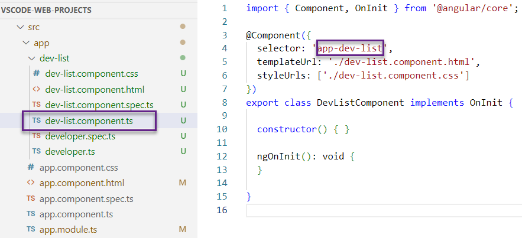
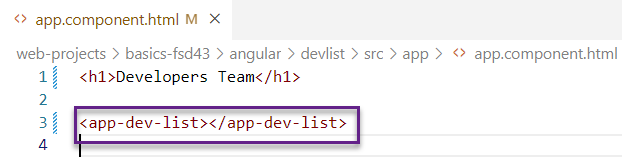

Angular Tutorial
What is Angular?
Angular is a JavaScript framework for building modern single-page web applications.

Official Website: www.angular.io This contains official documentation and tutorials.
It provides a set of tools and techniques for building robust, scalable, and maintainable applications.
Key Features of Angular
- Component-based framework
- Clean separation of template coding and application logic
- Built-in support for data-binding and dependency injection
- Supports responsive web design and modern frameworks
- Bootstrap, Google Material Design and others...
Key Concepts of Angular
- Components: Angular applications are built using components, which are self-contained modules of code that define the behavior and appearance of parts of your application. Your application can Parent Components and Child Components.
- Templates: Angular uses HTML templates to define the structure and layout of your application. The components make use of View Templates.
- Directives: Angular provides a set of built-in directives for extending the behavior of HTML elements, as well as the ability to define your own custom directives. Directives are used to customize the behavior of your View Templates.
- Services: Services are used in Angular to provide functionality that can be shared across multiple components. Clien-side code written in Typescript.
- Modules: Collection of related components, services, directives, etc.
- Dependency Injection: Angular's dependency injection system makes it easy to manage dependencies between components and services.
- Routing: Angular's built-in router makes it easy to navigate between different views and components in your application.
- Testing: Angular provides a comprehensive testing framework for writing unit tests, integration tests, and end-to-end tests for your application.
Getting Started with Angular
To get started with Angular, you'll need to install it using a package manager like npm, and then create a new Angular project using the Angular CLI. From there, you can start building your application using the tools and techniques provided by Angular.
Setup your Environment
includes how to setup your system for Angular development
Creating a New Angular Component
Development Process
- Create a new project:
ng new <project-name> - Update main template page: You can find it under app folder of src folder
 Delete everything in the file and add some sample code like:
Delete everything in the file and add some sample code like:

- Generate a new component:
ng generate component <component-name>ng generate component dev-list
The following folder is created with it's respectives files. This new component dev-list is added inside app component. App Component is outermost component which is auto-generated when a new angular project is created.
This new component dev-list is added inside app component. App Component is outermost component which is auto-generated when a new angular project is created.
- Add new component selector to app template page
Where to find the selector value?
In the above step, we created a component called dev-list. Go to dev-list folder and open it's component.ts file. 
- Copy the value of selector property of @component decorator in dev-list.component.ts
- Go to parent component's template page: app.component.html file
- Type a tag with that selector value as tag name. 
- Check the dev-list.component.html file. It already contains an auto-generated code.

- Run the project and check the result on browser.
ng serve --open - Generate a Developer class
- In DevListComponent, create sample data
- In dev-list template file, build HTML table by looping over data
Integrating Angular and Bootstrap CSS
Developement Process
- Get links for remote Bootstrap files
- Go to www.getbootstrap.com
- Click Read the docs
- Scroll down to Include Bootstrap’s CSS and JS topic
- Copy link tag
- Add link under head tag of index.html
- Apply Bootstrap CSS styles in component HTML template
- Go to app component's template file
- Create a div around existing content and apply container class to this div. Apply mt and mb for h1 tag.
- Apply Bootstrap CSS styles in component HTML table
- Update Typescript component file to reference Bootstrap HTML template